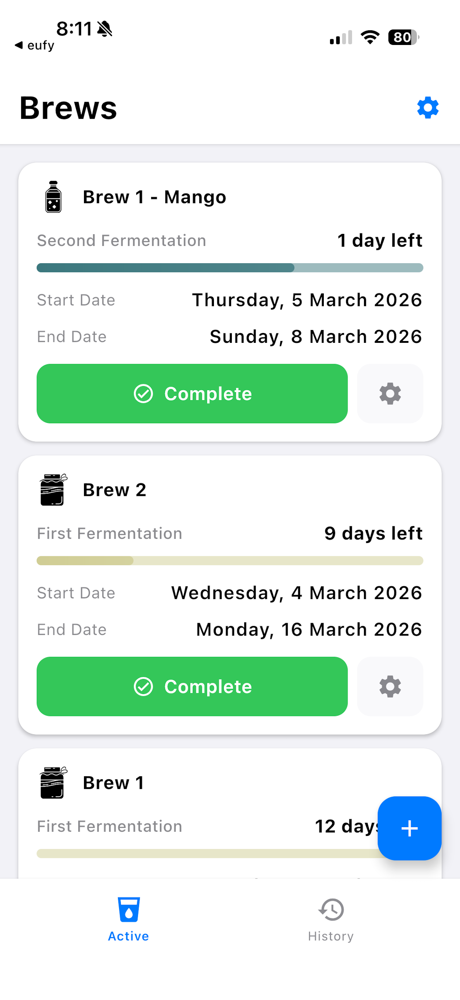

Simple kombucha brew tracking
Brew your kombucha with confidence and ease using Kombu Time, the app designed to keep your brewing process simple and stress-free. Perfect for kombucha enthusiasts who value simplicity. Track first and second fermentations, manage flavors and tea types, and view your brewing history—all without the clutter of unnecessary features.
